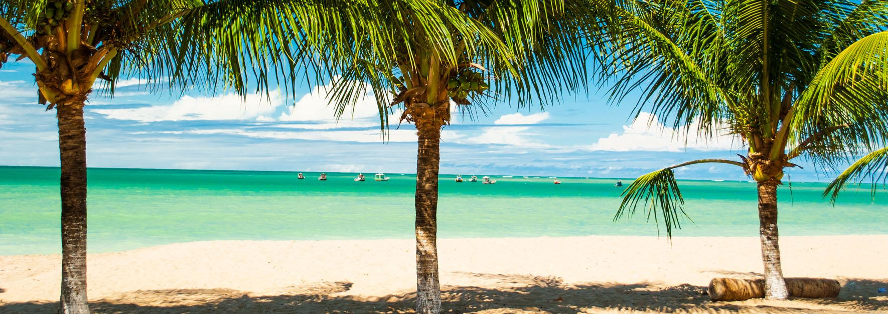
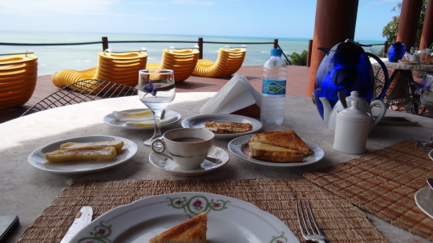

Escondida na Costa dos Corais - entre Maceió e Recife -, a antiga colônia de pescadores é um refúgio perfeito em meio a águas calmas, areias finas, recifes e coqueirais a perder de vista. Os 15 quilômetros de litoral da cidadezinha estão divididos
em cinco praias. Deserta, praia do Boqueirão surpreende pelo cenário perfeito A que dá nome à vila abriga a prefeitura, os dois postos de saúde, as escolas, as praças, a delegacia, o mercado público e a igreja de Nossa Senhora das Candeias, construída
pelos holandeses há mais de 300 anos. Na beira do mar calmo, concentram-se bares e restaurantes que capricham nos pescados. Seguindo em direção às falésias surgem as praias de Bitingui, contornada por casas de veraneio e águas mansas; e Barreiras
do Boqueirão, a mais movimentada da região, com fontes de água doce, casinhas rústicas e quiosques que servem peixe frito. A deserta praia do Boqueirão vem logo depois e chama a atenção pelos densos coqueirais e as areias branquinhas. O último trecho
é a praia do Pontal, um encontro do mar com o rio Manguaba. É dali que parte a balsa que leva à cidadezinha de Porto de Pedras. Vale a pena atravessar o rio e curtir a praia do Patacho, umas das mais exclusivas da região. Alem de lagartear nas areias
quase semrpe desertas, faça um passeio de jangada até às piscinas naturais, repletas de peixes coloridos e lindas formações de corais. Caminhar é uma das melhores maneiras de explorar os idílicos cenários de Japaratinga. Mas há também passeios de
bugue, de barco e a cavalo que descortinam as paisagens por outros belos ângulos. Para apreciar tudo do alto, faça uma parada no mirante Aruanã, com belíssima vista.
Culinária
Restaurante conhecido por muitos turistas como um local no qual você se come bem por um preço justo. E esse é uma característica super positiva! Além de conter variedades de frutos do mar, ainda apresenta o prato típico de Japaratinga: o Guaiamum
na água e sal e ao coco. Vale a pena pelo atendimento, bem como acomodações distintas. Saiba como chegar ao restaurante Choupana do Guaiamum: Rua Nossa da Penha, 100 – Henrique Jorge – Japaratinga Telefone: (82) 9176 7244 / 9142 5328

Pousada Paraíso dos Coqueirais
Aqui está um local no qual além de comer muito bem, ainda há a oportunidade de hospedagem. A Pousada Paraíso dos Coqueirais disponibiliza um restaurante que serve café da manhã, almoço e jantar. Também há opção de tira gostos para quem quer passar
o dia na piscina ao invés de se deslocar para a praia. Concentra um cardápio que varia da culinária típica como Carne de Sol com Feijão Tropeiro a pratos distintos com frutos do mar, como o Polvo a Provençal. Saiba como chegar a Pousada Paraíso
dos Coqueirais: Rodovia AL 101 Norte, km 121, Japaratinga, AL, Brasil Telefone: (82) 3297 1125 / 9986 4823 / 8812 5677